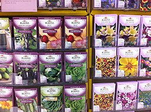
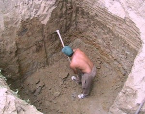
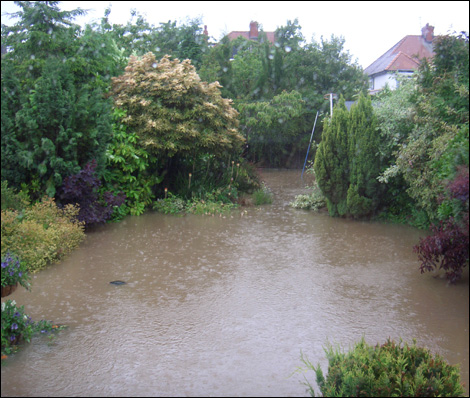
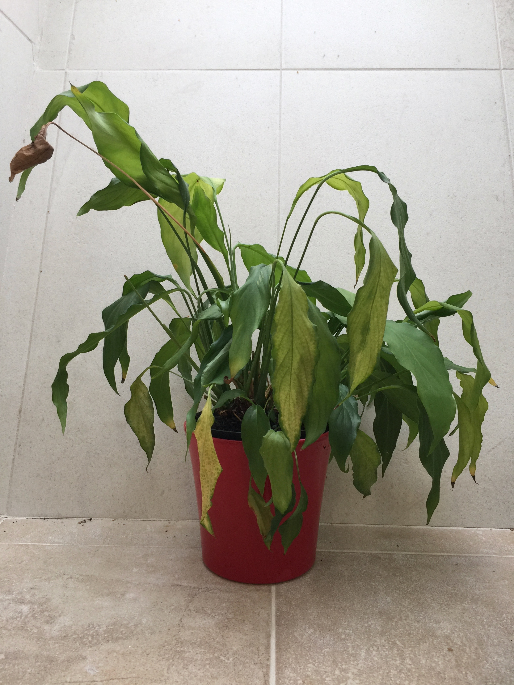
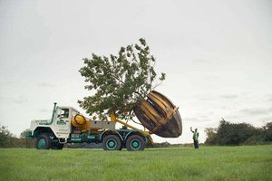
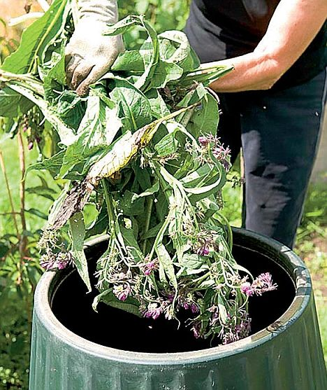

How to garden
Buying plants vs buying seeds

Only buy seeds if you have the space to deal with the results. If you want to grow tender plants, that will be damaged or killed by frost, you will need somewhere to keep all the little pots. If you want to sow directly into the ground, you will need to know the difference between the seeds and the weeds. Some plants, like carrot and parsnip, really only grow where they are sown. Others, like peas and beans can be sown in one place and grown on in another. If you are new to gardening, there is no harm in buying ready grown plants to put straight out into the garden. Starter seeds include cress, which is easy to germinate on a little tray on a windowsill, and radish (see
25 Plants ).
How to plant a plant

Basically, dig a hole in the ground large enough to take the whole pot. Don’t leave anything that was in the pot sticking out of the ground, but likewise, don’t bury it much deeper than it was in the pot (a centimetre or two is OK). If you can’t get the hole deep enough, don’t plant it there. Before you plant the plant, soak it by completely submerging the pot in water for between 5 mins and a hour, but certainly until all the air has bubbled out of the water. Take the plant out of the pot, jiggle the roots loose, stick in the hole, back fill with the soil you took out to make the hole, firm in it (flat of the hand or knuckles first, then if necessary a gentle and even firming all round with a boot). Finally, water in with a watering can with a rose. More advanced gardening includes digging a deeper, wider hole, mixing compost or grit into the soil at the bottom of the hole, watering into the hole before planting and watering again after planting. Some plants need to be planted deeper that they were in the pot, others need to be bang on level because of the graft joint.
Over-watering

It’s practically impossible to overwater a plant in the ground, but if the hose is left running for too long, the soil can be washed away and the roots exposed. Houseplants, and outdoor plants in pots can be overwatered if the pot sits in a pot holder. Overwatering happens when the holder gets full of water and the roots sit under water for several days or weeks. You can tell when this has happened because the water smells bad. With outdoor pots, it’s a good idea to empty the holder after a good rain deluge, and switch to pot ‘feet’ or bricks to lift the pot off the ground in winter. If this happens with your indoor plants, water less often or use less water. Many house plants grow better if the pot is soaked in a sink full of water, drained and then returned to the pot holder. Sometimes outdoor plant pots can have the nutrition washed out of the pot if subject to a lot of watering, but this is very rare.
Under-watering

The plant sags, and then very quickly droops, ultimately turning brown and crispy. Small terracotta pots, outdoors and in the full glare of the summer sun and a warm, drying wind can go from healthy to dead in less than an afternoon in my hands. This is not helped when the compost dries out, the water runs straight down the sides of the pot and onto the ground. Small pots and hanging baskets can be soaked in a bucket of water to replenish the moisture and larger pots or hanging baskets can use a water reservoir or an olla. New plants, planted out in the height of the summer and forgotten for a few weeks can turn to sticks. Drizzling the plant with a couple of pints of water every evening after work can be just as damaging, because it encourages the roots to grown on the surface rather than tunnelling down into the moisture retaining lower layers. So, for expensive perennials, shrubs and trees consider providing extra water in the form of a weekly drench during the first season or two until the root system is more properly establish. If I plant a tree or shrub in the middle of summer, I plant a small section of drain pipe or pond hose (about 30 – 50 cm long, depending on the root ball size) and pour the watering can down the pipe. Just watch out, because the slugs and snails love it down there.
When can I move a plant?

Depends on the plant. The only plants that really won’t survive a move are plants with a long tap root (like a mature carrot or a parsnip) but even then, I expect some people have made it work. What usually kills the plant is not the move, but the damage to the fine roots which affects the plants ability to take up sufficient water to keep the foliage alive. Moving usually requires pruning the plant as well to reduce the stress on the plant after it is moved. If in doubt, move it in early autumn to allow the roots to regrow at a time when the plant is naturally restricting its foliage growth.
What should I feed my plants?

Depends on the plant. I have about half a dozen different plant foods on the shelf of my potting shed, and I’m not really sure they are all that different. The only plants that really need feeding are those in pots, where access to nutrition from the soil is limited. Garden plants can benefit from an organic mulch in the winter. Because I have been inducted into the Dark Arts of Garden Maintenance, I know to use an ericaceous feed on my acid loving plants, like magnolias, azaleas and rhododendrons, as well as acers, when they start to look a little stressed, because our soil is quite neutral.